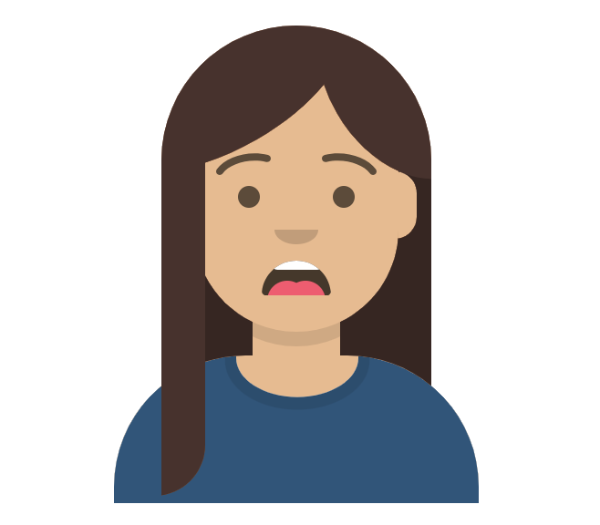
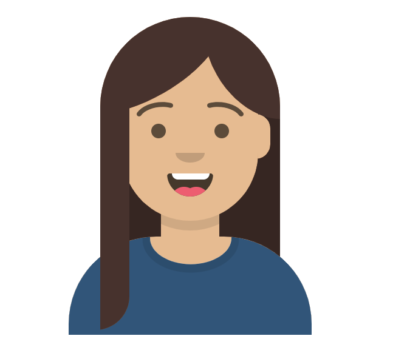
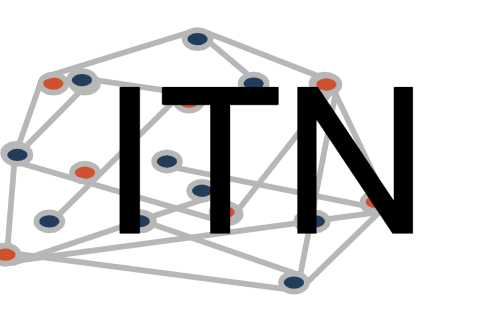

Attending Conferences
Helpful Tips
Helpful Tips
Last updated: March 07, 2025
Don’t worry!

Conferences can feel intimidating, especially your first few.
Imposter
syndrome can make it hard for anyone.

But don’t worry, this is a common feeling. Everyone is on an
even playing field to ask questions, attend sessions, and network. You
deserve to attend and no one completely understands every talk.
Conferences are for branching out and learning new things!
What to expect:
- Conferences cover a ton of information! (It may feel overwhelming)
- Talks conclude with time for questions
- Plenary talks are large talks typically for the full conference with experienced speakers
- People will attend talks and some will take notes
- People will come and go
- People will generally ask constructive questions
- Occasionally people might ask aggressive questions, but this is rare
Possible Goals:
Meet new people (planned and spontaneous discussions)
Share your research and get feedback
Look for a job
Get ideas for new projects
Find collaborators
Best Practices:
Don’t try to absorb everything!
- Focus on your interests, but also check out new topics.
Take notes

- It can be difficult to retain what you learn, so take notes. Include information about the researchers and relevant papers, so you can reach out or learn more.
Get ideas

- Conferences are a great places to make new connections.
Talk to people

- You never know who you might be sitting next to! Find new collaborators, people who know about helpful new methods, opportunities, jobs, etc.
- People in your network can help introduce you to others
- Start with small talk, talk about a presentation, or talk about your work
- Transition times and during breaks are good opportunities to meet people
- Talk to speakers, ask questions (this can be after a talk or during the talk)
- Email people or connect on LinkedIn
Possible Questions to Ask:
- What are your next steps/future directions?
- What was a challenge in your methods?
- Why did you pick specific [tissue/approach/question]?
- Can we revisit [graph/finding/table]?
- What are the implications/impact of your findings? How could this be applied?
- Have you thought about how [other specific finding] may influence your research findings?
- I didn’t catch this detail, can you say it again?
Say your name and institution before you ask a question.
Virtual Conference Etiquette:
Keep muted
If presenting, put your computer in do not disturb to avoid interruptions
Consider showing your video (it’s nice for speakers)
Reach out on LinkedIn or the chat to “talk” to people
Try to focus, but if you have other pressing obligations you can leave and come back
In Person Conference Etiquette:
Silence your cell phones and computers
Sit towards the back or outside if you must leave early
Give yourself extra time to walk from one room to another, some conferences are very large!
Plan which talks to go to, but be open to adjust
Networking at lunch/coffee can be just as important as going to talks
After the Conference:
Reach out to new contacts
Whether formal (to present to your lab) or informal, consider the following questions:
- Why did I go to this conference?
- What did I do at the conference?
- What could I do differently?
- What did I learn/takeaways?
Revisit your goals here, how did you do?
